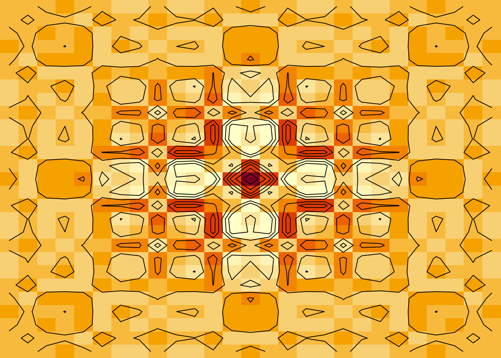

Matrices are a fundamental component of any scientific programming
language. In fact, MATLAB, a scientific language used by millions of
engineers, is an acronym for MATrix LABoratory. In R, there are several
ways to create and manipulate matrices. However, R’s matrix syntax is
quite different from most other programming languages — most of which do
share a familiar syntax. In this vignette, we discuss
ramify, a simple package providing R with additional matrix
functionality. The added functions and syntax should make R users who
are more familiar with other languages — such as Julia, MATLAB/GNU Octave, or Python — feel closer to home.
Introduction
There are several methods available for constructing matrices in R.
The usual approach is to use the base function matrix. For
example, the following snippet of code creates the matrix
:
## [,1] [,2] [,3] [,4]
## [1,] 1 2 3 4
## [2,] 5 6 7 8Notice that we need to specify the shape of the matrix (here we used
nrow = 2, but could also have set ncol = 4,
or both). Also, by default, R fills matrices using column-major order.
To fill the matrix using row-major order, we had to set
thebyrow argument in matrix to
TRUE.(Even though we set byrow = TRUE, the
matrix is still stored in column-major order. This may have unintended
side-effects. For instance, removing the dimension attribute flattens
the matrix into a vector by appending each column together.) Although
the code is simple, users coming from other scientific languages may
prefer a more familiar syntax.
The following table gives some examples for constructing matrices in five of the most popular scientific languages.
| Language | Syntax | Note |
|---|---|---|
| Julia | [1 2 3 4; 5 6 7 8] |
NA |
| Mathematica | {{1, 2, 3, 4}, {5, 6, 7, 8}} |
NA |
| MATLAB/GNU Octave | [1, 2, 3, 4; 5, 6, 7, 8] |
commas may be omitted |
| Python | [[1, 2, 3, 4], [5, 6, 7, 8]] |
NA |
| Python+NumPy | numpy.mat("1, 2, 3, 4; 5, 6, 7, 8") |
commas may be omitted |
What is most convenient about the matrix syntax expressed in column two is the visual separation of rows. This makes it quite easy for the user to see the structure of the matrix they are working with. You do not see this with the traditional matrix function in R, unless you force individual rows onto new lines manually:
## [,1] [,2] [,3] [,4]
## [1,] 1 2 3 4
## [2,] 5 6 7 8But this is rather hacky in comparison and still requires the user to
specify how the vector should be split up (e.g., nrow = 2
and byrow = TRUE). The ramify package’s main
function mat extends matrix by adding this
simplicity using the more common syntax.
The ramify package is hosted on GitHub at . It is also
available on CRAN. To install the latest stable release from CRAN:
install.packages("ramify") # latest stable releaseTo install the development version from GitHub you can use the devtools
package:
# install.packages("devtools")
devtools::install_github("bgreenwell/ramify") # development versionBug reports or issues should be submitted to . Suggestions for
improvement can be emailed directly to the package maintainer. The
version of ramify used in this paper is version 0.3.1.
The mat function
The main function in this package is mat. For all
intents and purposes, mat is simply an extension of the
base function matrix that adds two new S3 methods: a method
for class "character" and another for class
"list". Fortunately, since mat is simply a
wrapper around matrix, we can still use it in the exact
same way. That is, any use of matrix also applies to
mat.
Character method
Function mat provides a new way of creating matrices
using a convenient string initializer (not unlike the matrix constructor
in NumPy). For instance, we can recreate the matrix
using mat as follows:
##
## Attaching package: 'ramify'## The following object is masked from 'package:graphics':
##
## clip
mat("1, 2, 3, 4; 5, 6, 7, 8")## [,1] [,2] [,3] [,4]
## [1,] 1 2 3 4
## [2,] 5 6 7 8The colon operator can also be used, as in
mat("1:4; 5:8").
The character method of mat is very simple. First, the
character string is split on the semicolons creating character strings
representing the row vectors. Second, the resulting character strings
are further split on commas. The individual characters are then parsed,
evaluated, and fed to matrix.
The first argument to mat (and the only one required)
should be a character string in which semicolons separate row vectors
and commas separate individual elements. However, at the time of this
writing, there are two optional arguments: rows and
sep. rows accepts a logical indicating whether
the semicolon separates rows (rows = TRUE) or columns
(rows = FALSE). The default is TRUE. For
instance, to create the matrix
just write
mat("1:4; 5:8", rows = FALSE) # ; separates columns## [,1] [,2]
## [1,] "1:4" "5:8"The second optional argument, sep, accepts a character
vector containing regular expressions to use for splitting up the
individual elements within each row/column. By default,
sep = ",". To change the default behavior of separating
individual elements by commas, change the value of sep to
any other valid character. For example, in order to use spaces instead
of commas, write
mat("1 2 3 4; 5 6 7 8", sep = "") # blank spaces separate columns## [,1] [,2] [,3] [,4]
## [1,] 1 2 3 4
## [2,] 5 6 7 8To bypass setting these options every time, the user can change them globally with
options(mat.rows = FALSE, mat.sep = "") # change default behaviorR functions can be used within the character string as well, but one
must be careful. For example, mat("rnorm(10)") works
because there are no semicolons or commas, hence, the character string
is just parsed and evaluated. However,
mat("rnorm(10, sd = 3)") produces an error because
mat will split the character string on the comma resulting
in two substrings that cannot be parsed:
strsplit("rnorm(10, sd = 3)", split = ",")## [[1]]
## [1] "rnorm(10" " sd = 3)"One particular way around this is to set the sep option
to NULL:
mat("rnorm(5); rnorm(5, mean = 10)", sep = NULL)## [,1]
## [1,] "rnorm(5)"
## [2,] " rnorm(5, mean = 10)"There is often a need to construct matrices from the elements of a list. For example, I tend to store the results of simulations in a list and later want to treat the elements (usually a vector of results) as the rows/columns of a matrix. While this is not difficult to do manually, I frequently have to stop and think for a minute of the best way to accomplish this.
For example, suppose we want to take the list
z <- list("a" = 1:10, "b" = 11:20, "c" = 21:30)and convert it into a matrix of the form Three approaches come to mind:
## [,1] [,2] [,3] [,4] [,5] [,6] [,7] [,8] [,9] [,10]
## [1,] 1 2 3 4 5 6 7 8 9 10
## [2,] 11 12 13 14 15 16 17 18 19 20
## [3,] 21 22 23 24 25 26 27 28 29 30
# Approach 2
do.call(rbind, z)## [,1] [,2] [,3] [,4] [,5] [,6] [,7] [,8] [,9] [,10]
## a 1 2 3 4 5 6 7 8 9 10
## b 11 12 13 14 15 16 17 18 19 20
## c 21 22 23 24 25 26 27 28 29 30
# Approach 3
t(simplify2array(z))## [,1] [,2] [,3] [,4] [,5] [,6] [,7] [,8] [,9] [,10]
## a 1 2 3 4 5 6 7 8 9 10
## b 11 12 13 14 15 16 17 18 19 20
## c 21 22 23 24 25 26 27 28 29 30All three approaches succeed in constructing the correct matrix.
Using matrix is simple, but requires the user to flatten
the list first and specify the number of rows (or, equivalently, the
number of columns) ahead of time. Approach two is probably the best, but
novice users are not likely to be familiar with do.call or
the rbind and cbind method of combing vectors
in R. Similarly, in the third approach, new users are not likely to be
familiar with simplify2array, and the user has to take the
transpose of the resulting matrix.
Using mat we can construct the matrix as follows:
mat(z)## [,1] [,2] [,3] [,4] [,5] [,6] [,7] [,8] [,9] [,10]
## a 1 2 3 4 5 6 7 8 9 10
## b 11 12 13 14 15 16 17 18 19 20
## c 21 22 23 24 25 26 27 28 29 30Notice how the element names are preserved as row names. We could
force the list elements to be columns instead by setting
rows = FALSE. Similar to approach two, mat
uses do.call with rbind and cbind
to construct matrices from lists.
Better printing for “large” matrices
Printing matrices in R can be troublesome. By default, R will try to
print the entire matrix to the screen until it reaches its limit (given
by getOption("max.print") which is usually set to 10000).
Columns will also spill onto multiple rows, if there are enough of them.
It is therefore not very useful to print even moderately large
matrices.
Advanced users typically use the head and
tail functions for viewing, respectively, the first and
last few rows of a matrix or data frame. However, if there are a lot of
columns, they will still spill over onto the next row on the screen. To
see this, try running the following
A new generic function pprint (which stands for pretty
print) is included with the package. S3 methods for objects of class
"matrix" and "data.frame" are also available.
Since its a generic, users can add new methods to suit their needs
(e.g., special printing for lists).
With pprint, large matrices are printed in a much nicer
way. For instance,
## 1000 x 1000 matrix of doubles:
##
## [,1] [,2] [,3] ... [,1000]
## [1,] -1.0411988 0.5932583 1.0965630 ... 2.4340601
## [2,] 0.2754963 -1.3088191 0.2622602 ... 0.7401204
## [3,] 0.5300979 -0.1505787 -1.4788309 ... -1.6383585
## ... ... ... ... ... ...
## [1000,] -0.9052558 1.7976574 0.8991469 ... -0.1914337produces a matrix of normally distributed random numbers, but only the first few rows and columns, along with the last row and column, of the resulting matrix are shown. The dimension and storage mode are also printed above the matrix.
This printing behavior is also useful for viewing large numeric data
frames. pprint will convert data frames to a matrix via the
base function data.matrix. Consequently, logicals and
factors will be converted to integers before being printed. For data
frames, nicer printing is available via the "tbl_df"
class from the popular dplyr package.
Data frames and block matrices
Package ramify also provides two functions similar to
mat, namely, dmat and bmat.
Function dmat works exactly the same as mat
but results in a data frame, rather than a matrix. The bmat
function constructs block matrices using a character string
initializer.
Making data frames with dmat
Converting a list to a data frame in R is rather simple. An example is given in the code snippet below.
# List holding individual variables
z1 <- list(
Height = c(Joe = 6.2, Mary = 5.7, Pete = 6.1),
Weight = c(Joe = 192.2, Mary = 164.3, Pete = 201.7),
Gender = c(Joe = 0, Mary = 1, Pete = 0)
)
as.data.frame(z1) # convert z1 to a data frame## Height Weight Gender
## Joe 6.2 192.2 0
## Mary 5.7 164.3 1
## Pete 6.1 201.7 0When applied to a list, as.data.frame treats the
individual elements (i.e., Height, Weight, and
Gender) as columns. However, it is often the case that list
elements represent records, rather than individual variables. (This is a
common use for Python dictionaries which are naturally imported into R
as a list.) For example, consider the same list, but in a different
format:
# List holding records (i.e., individual observations)
z2 <- list(
Joe = c(Height = 6.2, Weight = 192.2, Gender = 0),
Mary = c(Height = 5.7, Weight = 164.3, Gender = 1),
Pete = c(Height = 6.1, Weight = 201.7, Gender = 0)
)Here, each list element represents an individual record. In order to convert this to a tidy data frame (in a “tidy” data frame, each variable forms a column, and each record forms a row), the necessary code in base R would be
as.data.frame(t(as.data.frame(z2)))## Height Weight Gender
## Joe 6.2 192.2 0
## Mary 5.7 164.3 1
## Pete 6.1 201.7 0That is, we first convert it to a data frame, then transpose the
result (which converts the data frame to a "matrix"
object), and then convert it back to a data frame. Using
dmat is much simpler:
dmat(z1, rows = FALSE) # treat list elements as columns of a data frame## Height Weight Gender
## Joe 6.2 192.2 0
## Mary 5.7 164.3 1
## Pete 6.1 201.7 0
dmat(z2) # treat list elements as rows of a data frame## Height Weight Gender
## Joe 6.2 192.2 0
## Mary 5.7 164.3 1
## Pete 6.1 201.7 0Construct block matrices with bmat
Suppose we have three matrices and want to construct the block matrix defined by In base R, we could accomplish this with the following code:
A1 <- matrix(c(1, 2, 5, 6), nrow = 2, byrow = TRUE)
A2 <- matrix(c(3, 4, 7, 8), nrow = 2, byrow = TRUE)
A3 <- matrix(c(9, 10, 11, 12), nrow = 1)
A <- rbind(cbind(A1, A2), A3)This can become rather complicated depending on the structure of the blocks. Specifying the matrices via character strings is more natural and greatly simplifies the task:
This function may be familiar to heavy Python+NumPy users since NumPy
has a similar function also called bmat. See, for example,
http://docs.scipy.org/doc/numpy/reference/generated/numpy.bmat.html#numpy.bmat.
Convenience functions
The main functions in this package are mat,
dmat, and bmat and can be viewed as an
extension to matrix; however, a number of convenience
functions are also available, most of which are listed in Table~. Some
of these functions appear in other R packages as well. Of particular
note are the matlab
and pracma
packages.
| Function(s) | Description |
|---|---|
argmax, argmin
|
Find the position of the maximum or minimum in each row or column of a matrix. |
eye |
Construct an identity matrix. |
hcat, vcat
|
Concatenate matrices. |
fill, ones, zeros,
trues, falses
|
Fill a matrix or array with a particular value. |
flatten |
Flatten or collapse a matrix into one dimension. |
inv |
Compute the inverse of a square matrix. |
linspace, logspace
|
Construct a vector of linearly-spaced or logarithmically-spaced elements. |
meshgrid |
Construct rectangular 2-D grids (useful for plotting). |
rand, randi, randn
|
Construct a matrix or array of pseudorandom numbers. |
size, resize
|
Extract or change the size and shape of a matrix or array. |
tr |
Compute the trace of a matrix. |
tri, tril, triu
|
Construct or extract lower and upper triangular matrices. |
Although the functionality listed in Table~ can be accomplished in
base R (though, not necessarily through a simple function), the
ramify functions are simple and more familiar to most
Julia, MATLAB/Octave, and Python+NumPy users; thus, making the
transition to R easier. linspace and logspace
are two such functions. For example,
linspace(1+2i, 10+10i, 8) creates a vector of complex
numbers with 8 evenly spaced points between 1+2i and
10+10i. In base R, we would use
seq(1+2i, 10+10i, length = 8). There is no base R
equivalent to logspace.
Another example is finding the trace of a matrix. To obtain the trace
of a matrix in base R the user must manually sum the diagonal entries.
Using the ramify function tr is simpler:
## [1] 5.025466
tr(m) # compute the trace using ramify's tr function## [1] 5.025466The function is called tr, rather than
trace, to avoid conflicts with a base R function called
trace that is used for interactive tracing and
debugging.
Many popular scientific languages also provide convenient ways to
generate vectors and matrices of pseudo-random numbers. Commonly found
functions are rand (for uniform random numbers) and
randn (for normally distributed random numbers). These and
more are available from ramify. We saw basic use of
randn in the section describing the pprint
function. The following snippet of code compares creating a
array of
random deviates in both base R and ramify via the
rand function.
a <- array(runif(20000), c(100, 100, 2)) # base R
a <- rand(100, 100, 2) # ramify
pprint(a[, , 1]) # print the first matrix## 100 x 100 matrix of doubles:
##
## [,1] [,2] [,3] ... [,100]
## [1,] 0.1221996 0.7687322 0.9387233 ... 0.2153990
## [2,] 0.5914145 0.4218321 0.9859374 ... 0.7559946
## [3,] 0.3592894 0.8645374 0.0195589 ... 0.3144480
## ... ... ... ... ... ...
## [100,] 0.3201394 0.6407993 0.1416152 ... 0.5271190Of course, the base R approach is more flexible as it allows you to
use any one of the built-in distributions (e.g., binomial), however,
generating uniform (continuous or discrete) and normal random variates
is far more common, hence, the popularity of the rand,
randi, and randn functions often seen in other
languages.
As seen in the previous example, many of the functions listed in Table~ can be used to construct vectors, matrices, or multi-way arrays just by specifying the extra dimensions. For example,
zeros(10) # 10x1 matrix (i.e., column vector) of zeros## [,1]
## [1,] 0
## [2,] 0
## [3,] 0
## [4,] 0
## [5,] 0
## [6,] 0
## [7,] 0
## [8,] 0
## [9,] 0
## [10,] 0
ones(10, 10) # 10x10 matrix of ones## [,1] [,2] [,3] [,4] [,5] [,6] [,7] [,8] [,9] [,10]
## [1,] 1 1 1 1 1 1 1 1 1 1
## [2,] 1 1 1 1 1 1 1 1 1 1
## [3,] 1 1 1 1 1 1 1 1 1 1
## [4,] 1 1 1 1 1 1 1 1 1 1
## [5,] 1 1 1 1 1 1 1 1 1 1
## [6,] 1 1 1 1 1 1 1 1 1 1
## [7,] 1 1 1 1 1 1 1 1 1 1
## [8,] 1 1 1 1 1 1 1 1 1 1
## [9,] 1 1 1 1 1 1 1 1 1 1
## [10,] 1 1 1 1 1 1 1 1 1 1
# fill(pi, 10, 10, 3) # 10x10x3 array filled with the constant piNote that these functions, by default, always return a
"matrix" or "array" object meaning there is
always a "dim" attribute. In contrast, in base R, vectors
do not have a "dim" attribute. So, when creating a vector
using zeros(10), for example, the result will be a matrix
of zeros with ten rows and one column. To bypass this behavior, you can
use the atleast_2d option:
zeros(10, atleast_2d = FALSE) # has class "integer", rather than "matrix"## [1] 0 0 0 0 0 0 0 0 0 0This behavior can also be changed globally using
options(atleast_2d = FALSE).
As a last example, we shal demonstrate the meshgrid
function. A meshgrid function is available in MATLAB/Octave
and Python+NumPy and is most frequently used to produce input for a 2-D
or 3-D function that will be plotted. It should be noted, however, that
the R version of meshgrid provided by ramify
returns a list of matrices. The following code, for example, plots
contours of the function
over the Cartesian grid
.
The resulting plot is created as follows.
x <- meshgrid(linspace(-4 * pi, 4 * pi, 27)) # list of input matrices
y <- cos(x[[1]]^2 + x[[2]]^2) * exp(-sqrt(x[[1]]^2 + x[[2]]^2) / 6)
par(mar = c(0, 0, 0, 0)) # remove margins
image(y, axes = FALSE) # color image
contour(y, add = TRUE, drawlabels = FALSE) # add contour lines
Color image and contour lines for .
Summary
Matrices are a fundamental feature of any scientific language. This
vignette introduced the simple R package ramify, which
provides additional matrix functionality in R. Using
ramify, I showed how to craft matrices using: (i) character
strings and (ii) lists. A similar construction of block matrices and
data frames was also briefly discussed. I also provided a quick summary
of a number of convenience functions for easing the transition to R from
other popular scientific languages such as Julia, MATLAB/Octave, and
Python+NumPy.